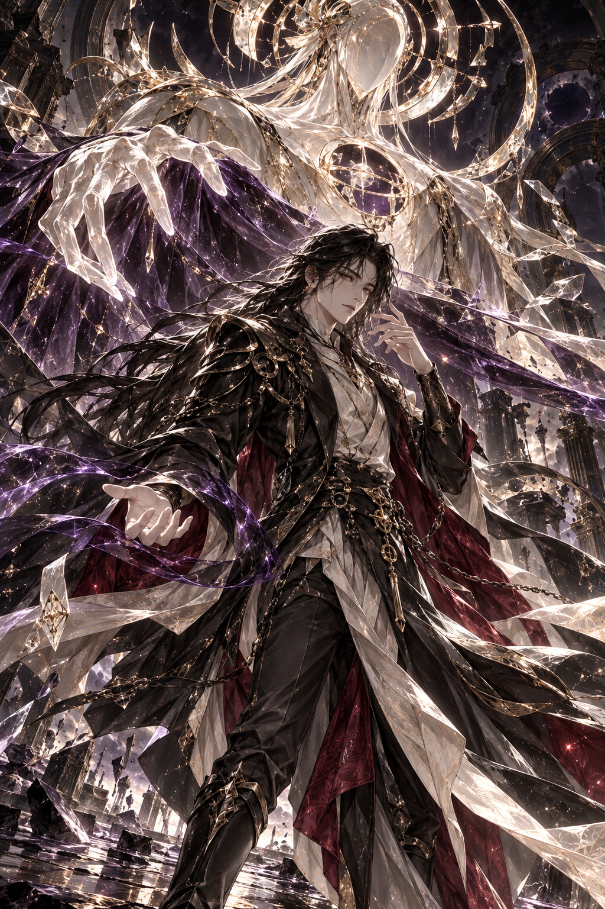

지워진 미래의 관측자
사현
SAHYEON
“눈을 감아.
네가 사라지는 미래까지
보고 싶지는 않다.”
- 전투력
- 2억 2천만
- 난이도 기준
- 아즈마 ×2
- 편성
- 보스 + 잔영 6
원화·전투 연출 검수본
THE OBSERVATORY
그가 지우지 못한
마지막 이름.
HYEONMUN / HOLLOW ICON
시선이 닿은 미래는 지워진다.
BATTLE STUDY
현문안과 공허법상
기술을 선택하면 전투 화면에서 재생됩니다.
기술을 선택하면 전장을 불러옵니다.
아즈마의 현재 운영 설정을 기준으로.
아즈마 1억 1천만 → 사현 2억 2천만
HP·공격·방어·보호막 예산 2배. 연타 2회, 강제 행동 간격, 스킬 봉인 4행동, 회복 차단 4행동, 궁극기 30%·보호막 관통 65%·슈트 스킬 방어 50%를 같은 조건으로 비교했습니다.
2배는 기본 전투력과 능력치 예산의 기준입니다. 편성에 따른 승률·클리어 시간이 정확히 2배라는 뜻은 아닙니다.